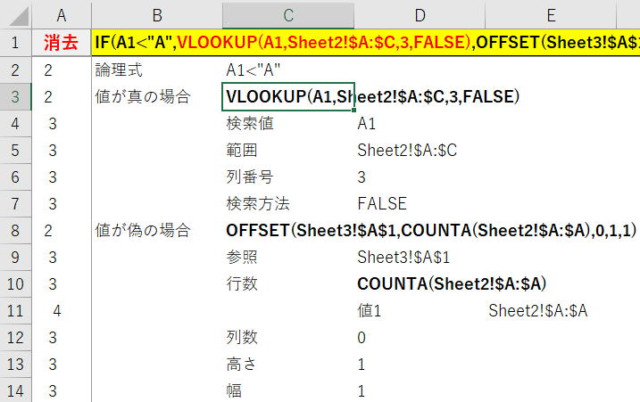

Excelシートの複雑な計算式を解析するVBA
セルに入力されている数式が折り返されていて複数行（ときに3行以上）になっている場合、
数式バーで見ていたのでは、どんな数式なのかがさっぱりわからなくなります。
そもそも、そのような複雑な数式は作らないほうが良いというのが基本です。
作業セル（計算セル）を使い、順序立ててわかるようにしておくべきものです。
追加々で組み立てていくと割と簡単に複雑な数式が出来上がってしまいます。
このような方法で作成されるので、
数式全体に無駄が多く条件が整理されていないなど最適化されていない数式である場合が多々あります。
既に作成済み（誰が作ったかはこの際抜きにして）の数式であれば、
変更が必要になった時など、いずれその数式を解析しなければならない時がきます。
今回のVBAは、そんな時の手助けツールとして作成したものです。
やたら複雑なことを考えては、VBAでは厳しいかなと諦めてしまったり。
・・・そして、よくよく落ち着いて考えたら・・・
人が（私が）複雑な数式を読むときの手順をその順番通りにやれば良いのだと気づき、
今回のVBA完成に至っています。
これは人が（私が）複雑な数式を読むときの基本手順です。
そして、これを繰り返して最小単位の関数にまで掘り下げています。
つまり今回のVBAは、これをそのままVBAにしたということです。
このような数式の場合、まず最初にIF関数の引数に分解します。
論理式：COUNTIF(範囲,検索条件)=1
真の場合：A1
真の場合：VLOOKUP(検索値,範囲,列番号,検索方法
そして次に、引数の数式を確認し、これが複雑なら同じことを繰り返します。
より複雑で長い数式であれば、
メモ帳に数式を貼り付けて、適宜改行したり、字下げしながら解読していきます。
複雑な数式の解析としては、実務的にはこれで十分なはずです。
自由にカスタマイズして使ってもらえれば良いと思います。
複雑な計算式を解析するVBAの概要
シート構成
関数構文 ・・・ VBA内のモジュールレベル定数で名称を指定しています。
数式解析
数式が折り返されて、数式全体がみえるようにする目的があります。
1行目の行高さは、VBA内で自動調整しています。
B1の番地は、VBA内のモジュールレベル定数で指定していますので変更可能です。
このB1セルに数式を文字列として貼り付け解析します。
（先頭の=はあってもなくても良い）
「全解析」：数式を全て最小単位の関数になるまで解析します。
その数式を分解し、当該行の下に行挿入して引数を出力します。
順次これを繰り返すことで、数式内の必要な部分を解析していけます。
関数構文

ここに設定した引数名が、解析結果の時に表示されます。
1行目以外は必須ではありません。
解析結果を見やすくするためだけが目的のシートになります。
（ほとんどの関数を入れています。）
複雑な計算式を解析する全VBAコード
シートモジュール（数式解析のシート）
Option Explicit
Private Sub Worksheet_BeforeDoubleClick(ByVal Target As Range, Cancel As
Boolean)
Call AnalyzeFormula(Target)
Cancel = True
End Sub
Private Sub Worksheet_SelectionChange(ByVal Target As Range)
Call AnalyzeHighlight(Target)
End Sub
BeforeDoubleClick
数式解析のメイン処理です。
元の数式(B1)内で、選択セルの文字列と同じ文字列部分をハイライト（赤）表示します。
標準モジュール
Option Explicit
'元数式のセル
Private Const oRange As String = "B1"
'ネストレベル管理列
Private Const ctlCol As Integer = 1
'関数構文シート
Private Const shFunc As String = "関数構文"
'ハイライトカラー
Const HightLight1 As Long = XlRgbColor.rgbRed
Const HightLight2 As Long = XlRgbColor.rgbBrown
'数式解析結果をクリア
Public Sub AnalyzeClear()
Application.ScreenUpdating = False
Dim ws As Worksheet
Set ws = ActiveSheet
'初期化：途中に空白行があるときも考慮
Dim i1 As Long, i2 As Long
i1 = ws.Range(oRange).Offset(1).Row
i2 = ws.UsedRange(ws.UsedRange.Count).Row
If i2 >= i1 Then
ws.Range(ws.Rows(i1), ws.Rows(i2)).Delete
End If
'元数式のセルの初期設定もここでやっておく
'先頭の=と改行があると邪魔なので消しておく
Dim strCalc As String
strCalc = ws.Range(oRange).Value
If Left(strCalc, 1) = "=" Then strCalc = Mid(strCalc, 2)
strCalc = Replace(Replace(strCalc, vbLf, ""), vbCr, "")
ws.Range(oRange).Value = strCalc
'元数式のセルは式全体が見えるように行高調整
Call ColumnFit(ws, ws.Range(oRange))
'Tagに初期値を入れておく：ControlのTagプロパティの代用
Call setTag(ws.Range(oRange), 1)
Application.ScreenUpdating = True
End Sub
'数式を一気に全解析
Public Sub AnalyzeAllFormula()
Application.ScreenUpdating = False
Dim ws As Worksheet
Set ws = ActiveSheet
'元数式の解析だけ最初に行う
Call AnalyzeFormula(ws.Range(oRange), False)
'解析結果に変化がなくなるまで
Dim iLast1 As Long
Dim iLast2 As Long
Dim myRng1 As Range
Dim myRng2 As Range
iLast2 = ws.Cells(ws.Rows.Count, ctlCol).End(xlUp).Row
Do Until iLast1 = iLast2
iLast1 = iLast2
Set myRng1 = Intersect(ws.UsedRange, _
ws.Range(ws.Rows(ws.Range(oRange).Offset(1).Row), _
ws.Rows(iLast1)))
For Each myRng2 In myRng1
'速度アップのためここではじく
If InStr(myRng2.Value, "(") > 0 Then
Call AnalyzeFormula(myRng2, False)
End If
Next
iLast2 = ws.Cells(ws.Rows.Count, ctlCol).End(xlUp).Row
Loop
Application.ScreenUpdating = True
End Sub
'数式解析メイン処理：一番外側の関数のみ解析
Public Sub AnalyzeFormula(ByVal Target As Range, _
Optional ByVal IsExpComp As Boolean = True)
'元計算式の場合のみ初期処理
If Target.Item(1).Address = "$B$1" Then
Call AnalyzeClear
End If
'既に展開済み
If ExpComp(Target, IsExpComp) Then
Exit Sub
End If
'関数が無ければ無視
Dim strCalc As String
strCalc = Target.Item(1).Value
If InStr(strCalc, "(") = 0 Then '数式以外の列をクリックしたときの対応
With Target.Worksheet
Set Target = .Cells(Target.Row, .Columns.Count).End(xlToLeft)
strCalc = Target.Item(1).Value
End With
End If
If InStr(strCalc, "(") = 0 Then 'それでも関数がないときは抜ける
Exit Sub
End If
'入力数式から改行を削除
strCalc = Replace(Replace(strCalc, vbLf, ""), vbCr, "")
'分解して配列に
Dim i As Integer, j As Integer
Dim ix As Integer
Dim CntParen As Integer '始まり括弧の数
Dim StartPos As Integer '処理文字位置
'引数を入れる配列：(0)関数名、(1)～引数
'ixが最後の引数のインデックスになります。
'ix+1に関数以降（+○）の数式を入れます。
Dim OutAray(255) As String
Dim OutAray2(255) As Integer '文字位置保存用
Dim sTag As String
sTag = getTag(Target)
StartPos = 1
i = 1
ix = 0
Do
Select Case Mid(strCalc, i, 1)
Case """" '次の"まで読み飛ばす
i = i + 1
Do Until Mid(strCalc, i, 1) = """"
i = i + 1
If i >= Len(strCalc) Then MsgBox "数式不正": Exit Sub
Loop
i = i + 1
Case "'" '次の'まで読み飛ばす
i = i + 1
Do Until Mid(strCalc, i, 1) = "'"
i = i + 1
If i >= Len(strCalc) Then MsgBox "数式不正": Exit Sub
Loop
i = i + 1
Case "(" '関数の引数始まり
CntParen = CntParen + 1
If CntParen = 1 Then '一番外の関数
'(0)固定で入れる
OutAray(0) = Mid(strCalc, StartPos, i - StartPos)
StartPos = i + 1
End If
i = i + 1
Case ","
If CntParen = 1 Then '一番外の関数内の引数
ix = ix + 1
OutAray(ix) = Mid(strCalc, StartPos, i - StartPos)
OutAray2(ix) = sTag + StartPos - 1
StartPos = i + 1
End If
i = i + 1
Case ")"
CntParen = CntParen - 1
If CntParen = 0 Then '一番外の関数が括弧で閉じられた
ix = ix + 1
OutAray(ix) = Mid(strCalc, StartPos, i - StartPos)
OutAray2(ix) = getTag(Target) + StartPos - 1
StartPos = i + 1
If i < Len(strCalc) Then
'関数()の後ろの文字列：ixカウントアップせず
OutAray(ix + 1) = Mid(strCalc, StartPos)
OutAray2(ix + 1) = getTag(Target) + StartPos - 1
End If
'関数が終わったので出力
Call PutArray(Target, OutAray, OutAray2, ix)
Exit Do
End If
i = i + 1
Case Else
i = i + 1
End Select
'文字列長を超えたら終了
If i > Len(strCalc) Then Exit Do
Loop
'数値が文字の「エラーを無視する」
Call IgnoreNumberAsText(Target)
End Sub
'元数式の、選択セルと同一数式部分をハイライト
Public Sub AnalyzeHighlight(ByVal Target As Range)
Application.ScreenUpdating = False
'シート取得しておく
Dim sh As Worksheet
Set sh = Target.Worksheet
'元数式の文字色を自動に戻す
With sh.Range(oRange).Item(1)
.Font.ColorIndex = xlAutomatic
End With
'元数式セルまたはセル値ブランクは無視
On Error Resume Next
If Target.Item(1).Address = "$B$1" Or _
Target.Item(1).Value = "" Or _
Target.Count > 1 Then '行・列選択回避
Application.ScreenUpdating = True
Exit Sub
End If
'元数式の当該数式部分をハイライト：
Dim strValue As String
Dim iPos As Integer
Dim i As Integer
strValue = Target.Item(1).Value
'同じ文字列があれば全てハイライト2：作業セル作りの参考になるので
i = 1
Do
iPos = InStr(i, sh.Range(oRange).Value, strValue)
If iPos = 0 Then Exit Do
With sh.Range(oRange).Item(1)
.Characters(Start:=iPos, Length:=Len(strValue)).Font.Color = HightLight2
End With
i = iPos + 1
Loop
'当該数式をハイライト1
i = getTag(Target)
iPos = InStr(i, sh.Range(oRange).Value, strValue)
If iPos = 0 Then Exit Sub
With sh.Range(oRange).Item(1)
.Characters(Start:=iPos, Length:=Len(strValue)).Font.Color = HightLight1
End With
Application.ScreenUpdating = True
End Sub
'関数の引数出力
Private Sub PutArray(ByVal Target As Range, _
ByRef OutAray() As String, _
ByRef OutAray2() As Integer, _
ByVal ix As Integer)
'シート取得しておく
Dim sh As Worksheet
Set sh = Target.Worksheet
'配列に入っていない場合は抜ける
If ix = 0 Then Exit Sub
'括弧で始まっている場合は、括弧をとるだけ
If OutAray(0) = "" Then
Target = OutAray(1)
Exit Sub
End If
'必要行の追加
sh.Rows(Target.Row + 1).Resize(ix).Insert
'挿入行の書式クリア
With sh.Rows(Target.Row + 1).Resize(ix)
.Clear
.NumberFormatLocal = "@"
.EntireRow.AutoFit
End With
Dim i As Integer, j As Integer
Dim strFunc As String
'「関数構文」より引数名を取得
On Error Resume Next
j = WorksheetFunction.Match(GetFuncName(OutAray(0)), _
Worksheets(shFunc).Columns(1), 0)
If Err Then j = 1
On Error GoTo 0
'配列(0)は関数名、(1)の引数から出力
For i = 1 To ix
With Target.Offset(i)
.Value = Worksheets(shFunc).Cells(j, i + 1)
If .Value = "" Then .Value = Worksheets(shFunc).Cells(1, i + 1)
.Offset(, 1) = OutAray(i)
sh.Cells(.Row, ctlCol) = Space(Target.Column) & Target.Column
Call setTag(sh.Cells(.Row, ctlCol), OutAray2(i))
End With
Next
'関数外の数式がある場合
If OutAray(ix + 1) <> "" Then
sh.Rows(Target.Offset(ix + 1).Row).Insert
With Target.Offset(ix + 1)
.Value = "その他"
.Offset(, 1) = OutAray(ix + 1)
sh.Cells(.Row, ctlCol) = Space(Target.Column) & Target.Column
Call setTag(sh.Cells(.Row, ctlCol), OutAray2(ix + 1))
End With
End If
'処理したセルはBold
Target.Font.Bold = True
'配列を初期化
ix = 0
ReDim OutArray(100)
End Sub
'解析結果の表示行の表示・非表示
Private Function ExpComp(ByVal Target As Range, _
Optional ByVal IsExpComp As Boolean = True) As Boolean
'シート取得しておく
Dim sh As Worksheet
Set sh = Target.Worksheet
'行の折り畳み＆展開
Dim sRow As Long
Dim eRow As Long
Dim iLevel As Integer
Dim i As Long
'自身のネストレベル以上の連続範囲を取得
iLevel = sh.Cells(Target.Row, ctlCol)
sRow = Target.Row + 1
i = sRow
Do Until sh.Cells(i, ctlCol) <= iLevel Or sh.Cells(i, ctlCol) = ""
eRow = i
i = i + 1
Loop
'自身のネストレベル以上があれば表示・非表示を切り替え
If eRow >= sRow Then
If Not IsExpComp Then
ExpComp = True
Exit Function
End If
sh.Range(sh.Rows(sRow), sh.Rows(eRow)).Hidden = _
Not sh.Range(sh.Rows(sRow), sh.Rows(eRow)).Hidden
ExpComp = True
Else
ExpComp = False
End If
End Function
'演算子等を除いて関数名の抜き出し
Private Function GetFuncName(ByVal strFunc As String) As String
Dim i As Integer
For i = Len(strFunc) To 1 Step -1
'関数は"[A-Z]|."
If (Mid(UCase(strFunc), i, 1) >= "A" And _
Mid(UCase(strFunc), i, 1) <= "Z") Or _
Mid(strFunc, i, 1) = "." Then
Else
strFunc = Mid(strFunc, i + 1)
Exit For
End If
Next
GetFuncName = UCase(strFunc)
End Function
'結合セルの行高の自動調整
Private Sub ColumnFit(ByVal sh As Worksheet, _
ByVal Target As Range)
Dim cWidth As Double '列幅：元
Dim tWidth As Double '列幅：結合セル合計
Dim rHeight As Double '行高
Dim mCount As Integer '結合セル数
Dim myRng As Range
'現在の状態を保存
mCount = Target.Item(1).MergeArea.Count
cWidth = sh.Columns(Target.Column).ColumnWidth
For Each myRng In Target.Item(1).MergeArea
tWidth = tWidth + sh.Columns(myRng.Column).ColumnWidth
Next
'結合解除
Target.MergeCells = False
'先頭セル幅を結合合計に
sh.Columns(Target.Item(1).Column).ColumnWidth = tWidth
'行高自動調整
sh.Rows(Target.Item(1).Row).AutoFit
'自動調整後の行高保存
rHeight = sh.Rows(Target.Item(1).Row).rowHeight
'先頭セル幅を元に戻す
sh.Columns(Target.Item(1).Column).ColumnWidth = cWidth
'再結合
Target.Item(1).Resize(, mCount).MergeCells = True
'調整後の行高に設定
sh.Rows(Target.Item(1).Row).rowHeight = rHeight
End Sub
'数値が文字の「エラーを無視する」
Private Sub IgnoreNumberAsText(ByVal Target As Range)
Dim rng As Range
For Each rng In Target.Worksheet.UsedRange
If rng.Errors.Item(xlNumberAsText).Value Then
rng.Errors(xlNumberAsText).Ignore = True
End If
Next
End Sub
'ControlのTagプロパティの代用として
Private Sub setTag(ByVal argRng As Range, ByVal argStr As String)
With argRng.Item(1).Offset(, ctlCol - argRng.Column).Validation
.Delete
.Add xlValidateInputOnly
.ErrorMessage = argStr
End With
End Sub
Private Function getTag(ByVal argRng As Range) As Integer
Dim strTag As String
With argRng.Item(1).Offset(, ctlCol - argRng.Column).Validation
strTag = .ErrorMessage
End With
If strTag = "" Or strTag = "0" Then strTag = 1
getTag = CInt(strTag)
End Function
外部から呼ばれる公開プロシージャーは4つです。
Public Sub AnalyzeClear()
Public Sub AnalyzeAllFormula()
Public Sub AnalyzeFormula(・・・)
Public Sub AnalyzeHighlight(・・・)
これが数式解析の心臓部です。
ここで、一番外側の関数を引数に分解しています。
分解結果は、Private Sub PutArrayでシートに出力しています。
AnalyzeFormulaを繰り返し呼ぶ事で一気に全解析するようにしているだけです。
VBA内のコメントを頼りにVBAコードを読み解いてください。
一番分かりづらいとしたら配列の部分だと思います。
関数を分解して引数を入れる配列です。
255というのは、Excel関数の引数の仕様上限数です。
上限が決まっていて、かつ大きな数字ではないので静的配列にしました。
とはいえ、そんなにたくさん引数を使っていたとしたら複雑とは別の問題がありますね。
'引数を入れる配列：(0)関数名、(1)～引数
'ixが最後の引数のインデックスになります。
'ix+1に関数以降（+○）の数式を入れます
例えば、
=IF(論理式,真の場合,偽の場合)+B1
この場合は、ixが3になり
(0)：IF
(1)：論理式
(2)：真の場合
(3)：偽の場合
(4)：+B1
このように入ります。
解析結果としては、
すぐ下の行に4行挿入して、これらを引数名とともに出力します。
汎用的に使える記述もありますので参考にしてください。
複雑な計算式を解析した結果の表示

IF(A1<"A",VLOOKUP(A1,Sheet2!$A:$C,3,FALSE),
OFFSET(Sheet3!$A$1,COUNTA(Sheet2!$A:$A),0,1,1))
この程度の数式なら、ツールを使うまでもないのですが、雰囲気を伝えるためのものです。
C3セルを選択しているので、B1セルの当該文字列が赤表示になっているのも見て取れるはずです。
VBA内にコメントを入れましたが、同じ文字列があれば全てハイライトしています。
これは同一数式が複数存在する場合は、それを作業セルにする時の参考になるという趣旨です。
実際の関数ネストとしては3重ネストということになります。
これは、列数と同じ数字を列数分のスペースをいれて表示しているだけのものですが、
解析結果を見るときの参考になると思い入れたものです。
最後に
最初に書きましたが、
作業セル（計算セル）を使い、順序立ててわかるようにしておき、
そもそもこんなツールが必要ないようにExcelを使うべきというのが基本原則になります。
その成り立ちと自身の思考を、整理・単純化することが大切だということです。
これはエクセルだけの話ではなく、全てに通じるものだと思います。
（さすがに実務ではそうそう複雑な数式はないのでテスト材料が不足です）
また、使ってみた感想などお送りいただければ励みになります。
同じテーマ「マクロVBAサンプル集」の記事
数独（ナンプレ）を解くVBAに挑戦№1
数独（ナンプレ）を解くアルゴリズムの要点とパフォーマンスの検証№1
ナンバーリンク(パズル)を解くVBAに挑戦№1
ナンバーリンクを解くVBAのパフォーマンス改善№1
オセロを作りながらマクロVBAを学ぼう
他ブックへのリンクエラーを探し解除
Excelシートの複雑な計算式を解析するVBA
Excel将棋：マクロVBAの学習用(№1)
Excel囲碁：万波奈穂先生に捧ぐ
Excel囲碁：再起動後も続けて打てるように改造
エクセルVBAで15パズルを作ってみた
新着記事NEW ・・・新着記事一覧を見る
VBA100本ノック 100本目：WEBから100本ノックのリストを取得｜VBA練習問題（3月3日）
VBA100本ノック 99本目：自動席替え（行列と前後左右が全て違うように）｜VBA練習問題（3月2日）
VBA100本ノック 98本目：席替えルールが守られているか確認｜VBA練習問題（3月1日）
VBA100本ノック 97本目：Accessデータを取得（グループ集計）｜VBA練習問題（2月27日）
VBA100本ノック 96本目：Accessデータを取得（マスタ結合&抽出）｜VBA練習問題（2月26日）
VBA100本ノック 95本目：図形のテキストを検索するフォーム作成｜VBA練習問題（2月24日）
VBA100本ノック 94本目：表範囲からHTMLのtableタグを作成｜VBA練習問題（2月23日）
VBA100本ノック 93本目：複数ブックを連結して再分割｜VBA練習問題（2月22日）
VBA100本ノック 92本目：セルの色を16進で返す関数｜VBA練習問題（2月20日）
VBA100本ノック 91本目：時間計算（残業時間の月間合計）｜VBA練習問題（2月19日）
アクセスランキング ・・・ ランキング一覧を見る
1.最終行の取得（End,Rows.Count）｜VBA入門
2.RangeとCellsの使い方｜VBA入門
3.変数宣言のDimとデータ型｜VBA入門
4.マクロって何？VBAって何？｜VBA入門
5.Range以外の指定方法（Cells,Rows,Columns）｜VBA入門
6.セルのコピー&値の貼り付け（PasteSpecial）｜VBA入門
7.繰り返し処理（For Next)｜VBA入門
8.セルに文字を入れるとは（Range,Value）｜VBA入門
9.マクロはどこに書くの（VBEの起動）｜VBA入門
10.とにかく書いてみよう（Sub,End Sub）｜VBA入門
- ホーム
- マクロVBA応用編
- マクロVBAサンプル集
- Excelシートの複雑な計算式を解析するVBA
このサイトがお役に立ちましたら「シェア」「Bookmark」をお願いいたします。
記述には細心の注意をしたつもりですが、
間違いやご指摘がありましたら、「お問い合わせ」からお知らせいただけると幸いです。
掲載のVBAコードは動作を保証するものではなく、あくまでVBA学習のサンプルとして掲載しています。
掲載のVBAコードは自己責任でご使用ください。万一データ破損等の損害が発生しても責任は負いません。